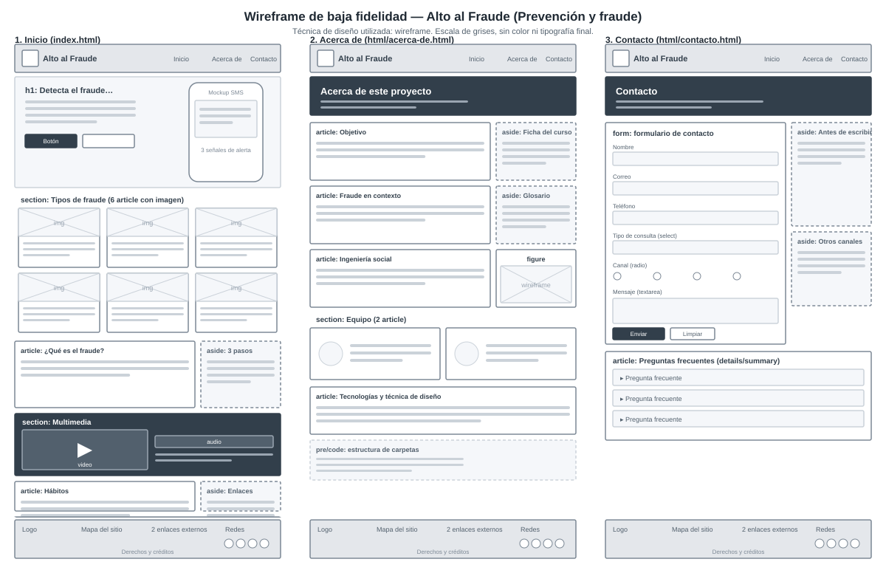

Un sitio hecho desde cero para explicar de forma clara cómo funcionan los fraudes y cómo protegerse de ellos.
Objetivo del sitio
Alto al Fraude nació como el Parcial N.º 1 de Desarrollo Web de la Licenciatura en Ciberseguridad. El tema asignado fue prevención y fraude.
El objetivo es que cualquier persona, sin conocimientos técnicos, pueda reconocer las señales de un engaño, saber cómo detenerlo y conocer los pasos a seguir si ya fue víctima. Por eso el contenido se organiza en tres ideas: qué es el fraude, cómo se presenta y qué hacer.
El fraude en contexto: el triángulo de Cressey
El criminólogo estadounidense Donald Cressey propuso, a mediados del siglo XX, que un fraude ocurre cuando coinciden tres factores. Este modelo, conocido como el triángulo del fraude, se sigue usando en auditoría y en prevención.
Presión
Una necesidad, casi siempre económica, que la persona percibe como imposible de resolver de otra forma.
Oportunidad
Una debilidad en los controles que permite engañar con poco riesgo de ser detectado.
Racionalización
Una justificación con la que quien comete el fraude se convence de que su conducta es aceptable.
Como usuarios y como organizaciones influimos sobre todo en la oportunidad: verificar, usar doble factor de autenticación y separar funciones son controles que la reducen.
Cómo actúa la ingeniería social
Aunque cada estafa cambia de canal, el proceso suele seguir una secuencia parecida:
Investigación: el atacante reúne datos sobre la víctima en redes sociales, filtraciones o directorios.
Contacto: se presenta como alguien de confianza, como un banco, un jefe o un servicio técnico.
Manipulación: crea urgencia, miedo o una oportunidad irresistible para que la persona no piense con calma.
Ejecución: obtiene la clave, el código o la transferencia que buscaba.
Salida: desaparece o borra el rastro antes de que se descubra el engaño.
Interrumpir cualquiera de estos pasos, sobre todo el tercero, hace fracasar el ataque.
Tecnologías y técnica de diseño
El sitio está hecho únicamente con HTML5 y CSS3, sin plantillas ni frameworks. Se usaron elementos semánticos (header, nav, main, section, article, aside, figure y footer), variables CSS, Flexbox, Grid, gradientes, transiciones y media queries para que se vea bien en teléfono, tableta y computadora.
La técnica de diseño utilizada fue el wireframe de baja fidelidad: primero se bosquejó la estructura de cada página en escala de grises, sin color ni tipografía, para decidir dónde iría cada bloque antes de programar.

Wireframe de las tres páginas (técnica de diseño utilizada).
La estructura de carpetas del proyecto es la siguiente: